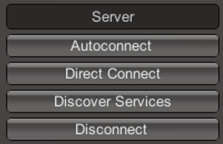
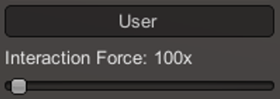
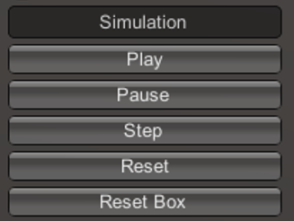
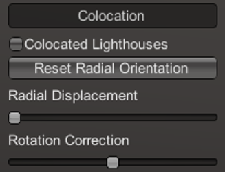
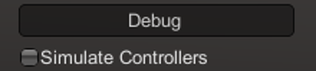
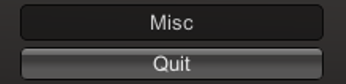

On-screen PC-VR menu
When you open the NanoVer iMD application on your PC, you will see a small menu in the top left of your screen with the following headings:
Server
{kind=link}
Autoconnect |
Connects to the first server found on the network, using the default parameters. |
Direct Connect |
Toggles a menu where you can change the IP address and trajectory/multiplayer ports of the server you wish to connect to. |
Discover Services |
Toggles a menu for searching for servers running on the network. Click “Search” to show the available servers. |
Disconnect |
If connected to a server, disconnects. |
User
{kind=link}
Interaction Force |
Scales the user’s interaction force. |
Simulation
{kind=link}
Play |
Plays the simulation. |
Pause |
Pauses the simulation. |
Step |
Moves to the next frame of the simulation. |
Reset |
Resets the simulation to the starting positions. |
Reset Box |
Moves and resizes the box to the original dimensions and position in the VR space. |
Colocation
{kind=link}
Colocated Lighthouses |
Toggles colocation. This is only compatible with players using HTC base stations. |
Reset Radial Orientation |
Orients players’ playspaces into a mandala. |
Radial Displacement |
Slides players’ playspaces inwards and outwards from the centre of the shared space. |
Rotation Correction |
Adjusts the rotation of players’ playspaces to align with the shared space. |
Debug
{kind=link}
Simulate Controllers |
Toggles the simulation of random interaction forces. |
Misc
{kind=link}
Quit |
Quits the program. |